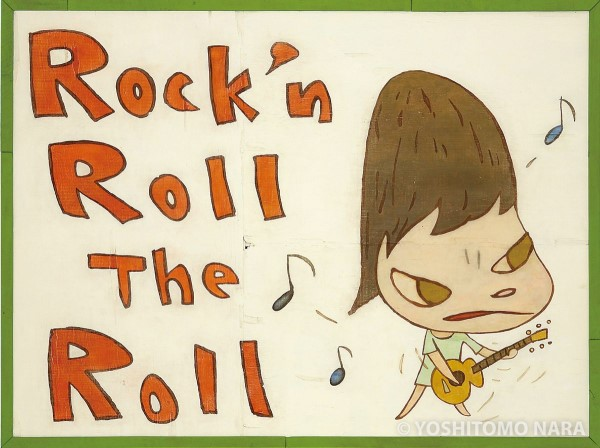

《Rock You》描繪了奈良標誌性的大頭女孩，她們異常龐大的雙眼和曖昧不明的情感狀態，滲透出藝術家多元紛陳的靈感來源，當中包括搖滾和龐克音樂、兒童繪本、日本傳統具象作品，以至意大利文藝復興畫作。

用手繪輸出聽覺世界：奈良美智的搖滾狂想
最近美國獨立大團Yo La Tengo 推出全新限量EP《Sleepless Night》，找來日本當代藝術家奈良美智（Yoshitomo Nara）製作專輯封面


奈良美智／ならよしとも 1959年12月5日—
奈良美智跟你想的不一樣？13個面向解密「當今日本最貴藝術家 ...
奈良美智為什麼選擇「畫留台灣」？
除了展覽與相關的公開活動以外，奈良其實也常在自己的推特上分享有關台灣的一切。他曾表示十分喜愛台灣日本語世代詩人陳秀喜的作品，也大力推薦描述台灣美術發展與政治啟蒙的影視作品《紫色大稻埕》，足見他對台灣的關注與喜愛。